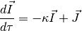
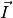
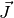
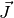
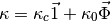
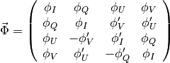
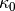
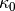

Polarized Radiative Transfer Through a Magentized Stellar Atmosphere¶
Radiative Transfer Through a Stellar Atmosphere¶
The emergent light from a star is a composite of all the outward-bound photons which manage to escape from their last scattering without further interaction with atoms in the stellar atmosphere. Photons created or scattered deep within the star have virtually no chance of escape, while photons created or scattered at the edge of the photosphere are virtually guaranteed to escape. The conditions within a stellar photosphere range from extremely hot and dense (at the base of the photosphere) to cooler and tenuous (at the edge of the photosphere). Applying the equation of radiative transfer to the case of a stellar photosphere:

where  is the intensity vector of the radiation,  is
the optical depth,
is
the optical depth,  is the opacity matrix, and  is
the emission vector.
is the opacity matrix, and  is
the emission vector.
Scalar Radiative Transfer¶
Moog (Sneden 1976) uses contribution functions to calculate the emergent spectrum. This is not possible for polarized radiation (at least not in this incarnation).
Polarized Radiative Transfer¶
Unno (1956) first attacked the problem of radiative transfer through a magnetic
medium, calculating the propogation of the Stokes vectors through a magnetized
atmosphere. The Unno equations accounted for the absorption profiles due to the
 and
and  components and generalized the equation of
radiative transfer to the four Stokes vectors.
components and generalized the equation of
radiative transfer to the four Stokes vectors.
Rachovsky (1962) slightly modified the equations of Unno to include the
magneto-optical effects (so-called anomalous dispersion) due to changes in the
imaginary component of the index of refraction. The full opacity matrix
is given by the following:

where:

and  is the continuum opacity, and  is the line
center opacity for the spectral line in question.
is the continuum opacity, and  is the line
center opacity for the spectral line in question.
Diagonal Element Lambda Operator¶
In order to trace the Stokes parameters through the stellar atmosphere, I use the Diagonal Element Lambda Operator method developed by Rees & Murphy (1989).
Described in Rees & Murphy (1989), the DELO method works by